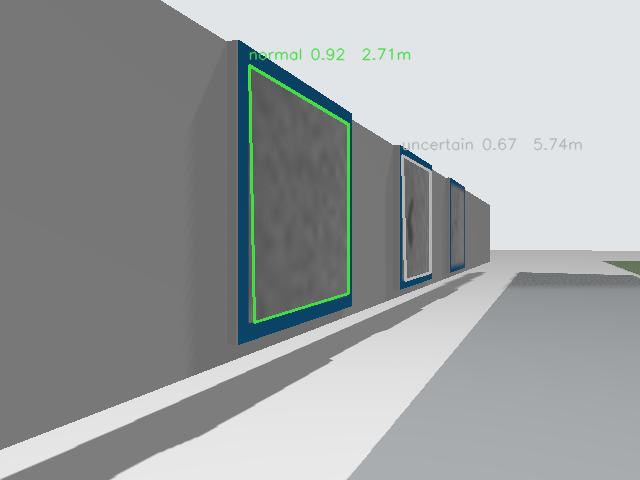
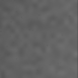
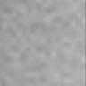
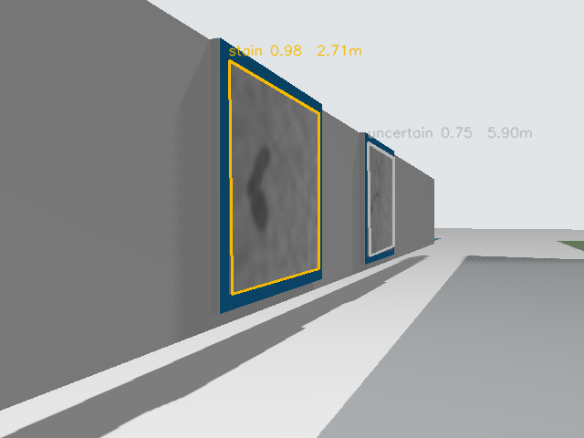
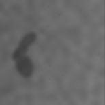
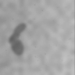
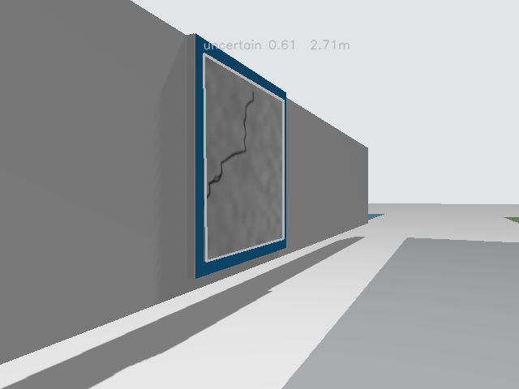
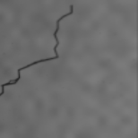
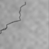

撮影対象（判定未確定） 1
停止位置: x=0.037 m / CNN出力: 0.921
推定異常位置 x: 3.872 m

CNNへ入力した領域（グレースケール）

実際のCNN入力（96×96、明るさ補正後）

終了状態: DONE / 点検回数: 3
合成画像を使ったシミュレーション実証。位置はオドメトリと画像からの推定値。
停止位置: x=0.037 m / CNN出力: 0.921
推定異常位置 x: 3.872 m

CNNへ入力した領域（グレースケール）

実際のCNN入力（96×96、明るさ補正後）

停止位置: x=3.013 m / CNN出力: 0.978
推定異常位置 x: 6.893 m

CNNへ入力した領域（グレースケール）

実際のCNN入力（96×96、明るさ補正後）

停止位置: x=6.012 m / CNN出力: 0.605
推定異常位置 x: 9.892 m

CNNへ入力した領域（グレースケール）

実際のCNN入力（96×96、明るさ補正後）
